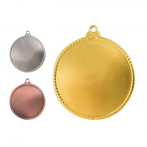
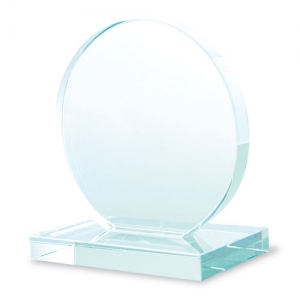

Tipos e variantes
Fitas, crachás e cartões
A fita suspende; o porta-cartões contém; o cartão apresenta a informação. Defina o conjunto pela orientação, pelo ponto de fixação e pela facilidade de ler o nome sem rodar o suporte.
Aspetos que distinguem as opções: Formato útil, abertura, orientação horizontal ou vertical e fixação.
Contexto possível: Receção, sessões e identificação de equipas.
Pulseiras de participação
Uma pulseira pode distinguir grupos por cor ou informação impressa. Isso não demonstra que impeça transferência entre pessoas, que seja inviolável ou que comunique com um leitor.
Aspetos que distinguem as opções: Fecho, ajuste, legibilidade e processo de verificação utilizado.
Contexto possível: Participação em atividades e organização de grupos.
Pins e crachás tipo botão
Um pin ou botão prende-se ao vestuário e pode transmitir uma mensagem curta. A área pequena favorece desenhos simples; o sistema de fixação condiciona colocação e remoção.
Aspetos que distinguem as opções: Ponta, fecho, verso e leitura à dimensão final.
Contexto possível: Identificação visual e expressão de participação.
Troféus e medalhas
O troféu é normalmente apresentado com uma base ou apoio; a medalha pode ser suspensa numa fita ou guardada num estojo. Distinga uma mensagem comum do nome e da data individuais.
Aspetos que distinguem as opções: Base, arestas, espaço de inscrição, suspensão e embalagem.
Contexto possível: Reconhecimento, participação e cerimónias.

Usos e contextos
- Separe participante, equipa e distinção: cada papel pode precisar de informação e formato próprios.
- Para uma entrega individual, organize nome, texto e sequência de distribuição antes de preparar as inscrições.
O que comparar
- Leia uma amostra à distância prevista e com a fita colocada; o texto pode parecer suficiente apenas quando está pousado.
- Distinga impressão fixa de informação individual. Nomes longos e funções extensas devem caber no mesmo esquema.
- Se existir controlo eletrónico, documente separadamente cartão, leitor e sistema. A imagem de um crachá não demonstra essa função.
Materiais e componentes
São possibilidades a identificar no artigo escolhido. Confirme a composição de cada parte; os materiais de uma variante não descrevem toda a família.
Cartões e suportes flexíveis
papel · cartão
Confirme dimensão, espessura e leitura dentro do porta-cartões.
Medalhas e ferragens
metais
Identifique acabamento e partes móveis; aparência dourada não identifica a liga.
Placas e troféus transparentes
vidro · outros materiais transparentes
A fotografia não distingue vidro de outros materiais transparentes; consulte a composição.
Zonas de personalização
- Frente de cartão ou crachá: Hierarquize nome, função e informação essencial, sem cobrir furos ou fixações.
- Face de medalha ou troféu: Meça o espaço efetivo e reveja acentos, nomes e data antes de produzir.

Técnicas e condições
Possibilidades gerais para comparar. A aplicação depende do artigo, da superfície, do desenho e das condições do processo; não está confirmada para um artigo específico.
Impressão digital UV
Avalie superfície e fixação de placas e cartões, preservando a função das zonas de leitura.
Gravação a laser
Avalie a composição e o revestimento, bem como contraste e dimensão dos caracteres.
Crachás tipo pin/botão
Este guia trata a montagem de crachás tipo pin/botão; não descreve todos os cartões e sistemas de identificação.
Limitações e cuidados
- Uma cor ou impressão não garante autenticidade nem controlo de acesso.
- Num sistema que trate dados pessoais, a informação às pessoas faz parte do processo. A referência da CNIL apresenta um exemplo de informação para acesso por cartão. ↗
- Verifique fechos e pontas antes da distribuição, de acordo com as instruções do conjunto.
- Guarde troféus e medalhas com separação entre peças quando o contacto puder marcar as superfícies; teste a apresentação com o conjunto real.
Antes de decidir
- Que informação tem de ser lida?
- Há nomes individuais?
- O objeto identifica ou integra um sistema de acesso?
Perguntas frequentes
Uma pulseira prova que uma pessoa tem autorização?
O objeto só tem esse papel dentro do processo de validação definido pela organização; não o garante por si só.
Qualquer fita serve para qualquer porta-cartões?
Verifique o encaixe, a orientação e o comportamento do conjunto colocado.
É possível gravar qualquer troféu transparente?
Não presuma composição ou resposta à gravação pela transparência; avalie o material e uma amostra.
Fontes e âmbito
As referências sustentam os factos identificados no texto. Os tipos, contextos e critérios de escolha são orientação editorial; as instruções de um fabricante aplicam-se ao seu próprio âmbito.
-
Informação aos titulares em sistemas de acesso por cartão
CNIL · Consulta:Exemplo institucional de informação sobre tratamento de dados num sistema de acesso. Não demonstra capacidade eletrónica de um cartão ou crachá.